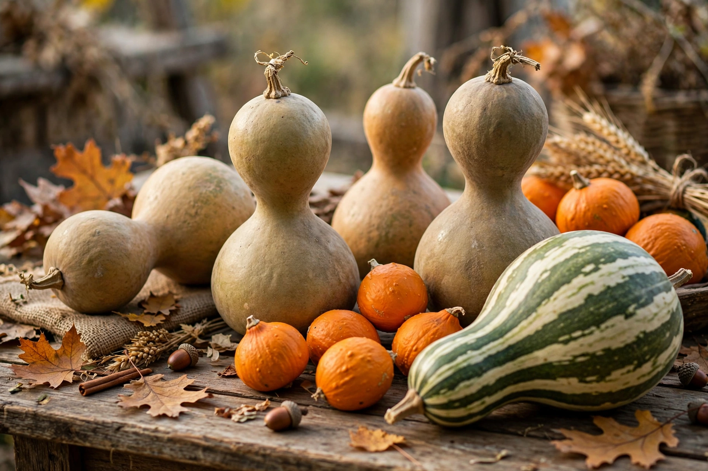

| Family | Cucurbitaceae |
|---|---|
| Main genera | Lagenaria, Cucurbita, Luffa, Benincasa, Momordica |
| Uses | Food, containers, utensils, musical instruments, decoration |
Gourds include the fruits of some flowering plant species in the family Cucurbitaceae, particularly Cucurbita and Lagenaria. The term refers to a number of species and subspecies, many with hard shells, some without. One of the earliest domesticated plants, the bottle gourd (Lagenaria siceraria), has been grown worldwide for millennia for food and as containers, utensils and instruments.
The bottle gourd is among humanity's oldest crops: archaeological remains date to roughly 11,000 years ago, and genetic evidence suggests it reached the Americas from Africa by floating across the Atlantic, or with early human migration, before 8000 BC. Because a dried gourd is light, buoyant, watertight and durable, it served pre-industrial societies as bottle, bowl, ladle, pipe and storage vessel — arguably the first container technology.
Beyond food and containers, gourds are central to musical instruments — the resonators of the sitar and many African instruments, the South American berimbau, maracas and the shekere — and to the drinking of yerba mate from a calabash. Ornamental gourds are autumn decorations in North America, and carved, painted and pyrographed gourds are a folk-art tradition on several continents. Shelled gourds also serve as birdhouses and fishing floats.
See also: Pumpkin · Cucurbitaceae · Squash